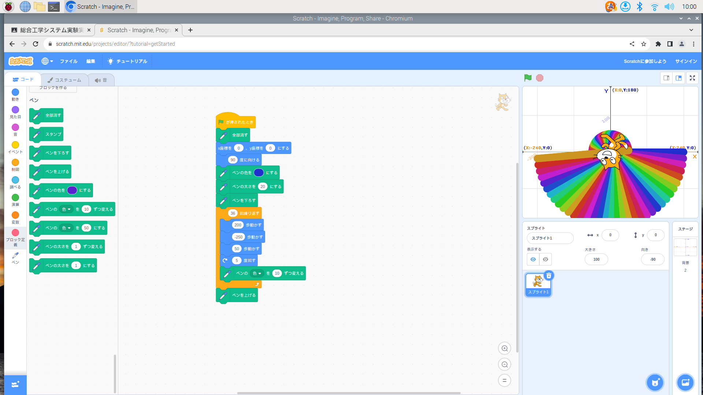
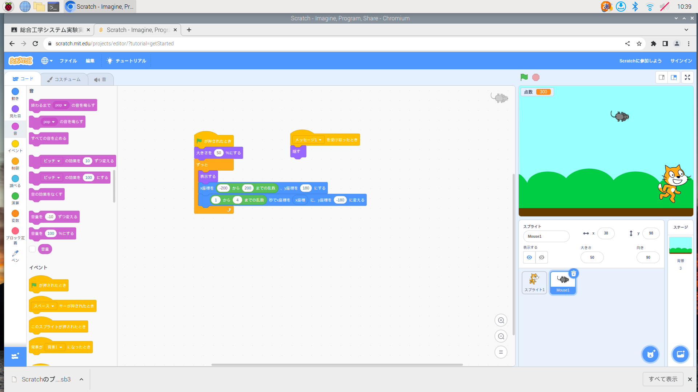
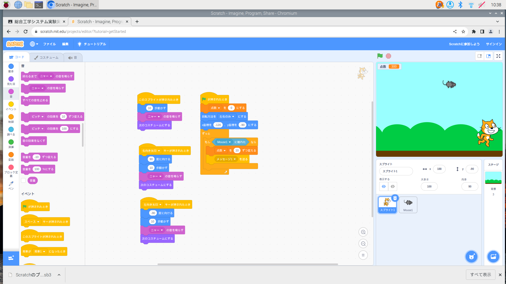

1週目のレポート ： 公大高専１年実習I-1
3B班35番 明星雄大
第1週目
1-1 サイエンスアート

1.内容
スクラッチを使って線を書くプログラムを作成し、そのプログラムを用いて扇子を描いた。
2.感想
スクラッチは、以前から知っていたが、ゲームを遊ぶだけでプログラムをしたことがなかったので、簡単なものではあるが作成できたので良かったです。スクラッチで他のことにも挑戦してみようと思いました。
1-2 ゲーム
 
1.内容
スクラッチを使って、猫が上から降ってくるネズミを捕るゲームを作った。
2.感想
自分でプログラミングをしてゲームを作ったことがなかったので、これからも挑戦してみようと思った。
1-3 ホームページ作成
私のホームページ
1.内容
Githubを使って、まず、アカウントを作り、ホームページを作る手順に従って作成し、その後、ホームページのタイトルを変えた。
2.感想
ホームページの作り方を知れたので、今後、ホームページを作ることがあるかもしれないから、その時は、同じようにして作ろうと思った。